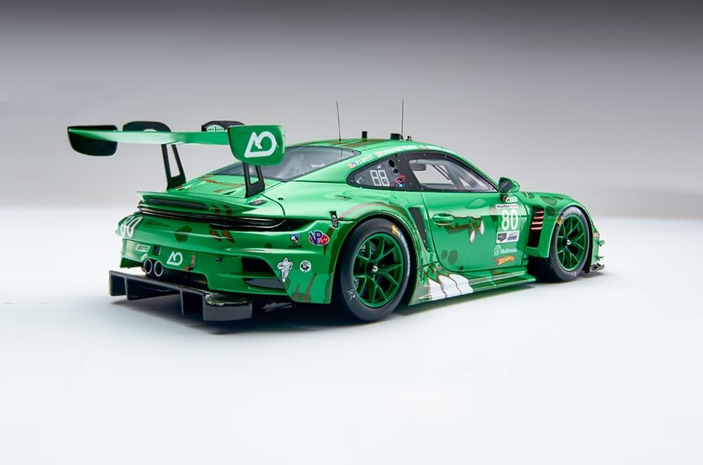
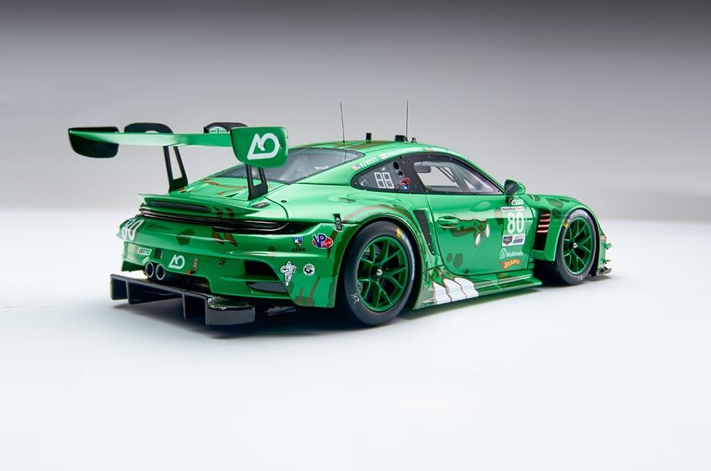

En Automobile, somos una concesionaria especializada en autos clásicos y modificados, donde la pasión por la herencia automotriz se une a la innovación en personalización. Desde 2012, nos dedicamos a restaurar y ofrecer vehículos icónicos de épocas pasadas, junto con creaciones customizadas que capturan el espíritu del tuning moderno, todo a precios accesibles para coleccionistas y entusiastas en México. Con un enfoque en la autenticidad, la calidad artesanal y el servicio personalizado, hemos ayudado a más de 5,000 apasionados a revivir o transformar su sueño sobre ruedas. Ya sea un Mustang de los 60 restaurado a la perfección o un JDM modificado con toques exclusivos, en Automobile celebramos la historia y la creatividad automotriz.


 

Automobile nació en 2012 en el corazón de la Ciudad de México, fundada por un grupo de entusiastas del automovilismo clásico que soñaban con un espacio dedicado a preservar y evolucionar los íconos de la carretera. Comenzamos con un taller modesto en la colonia Roma, restaurando solo 20 autos clásicos en nuestro primer año, enfocándonos en piezas originales y modificaciones sutiles.
Restaurar y personalizar autos clásicos y modificados con maestría artesanal y componentes de alta calidad, para que cada vehículo cuente una historia única y preserve el legado automotriz mientras se adapta al presente.
Convertirnos en el destino premier de Latinoamérica para entusiastas de autos clásicos y customs, fomentando una comunidad vibrante que impulse la preservación cultural y la innovación en movilidad personalizada.
En Automobile, nuestros valores guían todo: autenticidad con piezas originales para honrar clásicos; creatividad en diseños únicos que reflejan al dueño; calidad artesanal en talleres expertos para durabilidad y estilo; comunidad apoyando eventos y clubes de apasionados; y sostenibilidad reciclando partes vintage para minimizar impacto ambiental, creando autos que preservan historia e inspiran el futuro.
Entusiasta de la cultura automotriz, Ana organiza talleres y rodadas para clientes, logrando un 97% de lealtad en nuestra base de coleccionistas.

Con 18 años sourcing piezas raras y autos vintage, Luis asesora a clientes en encontrar el clásico perfecto o en planificar modificaciones a medida.

Con 28 años en el mundo de los clásicos, Carlos fundó Automobile y supervisa proyectos emblemáticos, como la restauración de muscle cars americanos para exposiciones.

Ingeniera mecánica con expertise en tuning JDM y europeo, María diseña customizaciones que equilibran rendimiento y estética, habiendo ganado premios en shows de autos.
En Automobile, creemos que los autos clásicos y modificados son más que vehículos: son expresiones de pasión, historia y estilo individual. Con nuestra experiencia en restauración, equipo de artesanos y compromiso con la excelencia, estamos aquí para ayudarte a revivir un ícono o crear uno nuevo que acelere tu corazón. Explora nuestro catálogo actual de más de 150 autos clásicos y customs disponibles, y únete a nuestra comunidad de apasionados.
¡Contáctanos hoy para una consulta personalizada, una visita al taller o detalles sobre nuestro próximo evento! Tu legado automotriz comienza en Automobile.